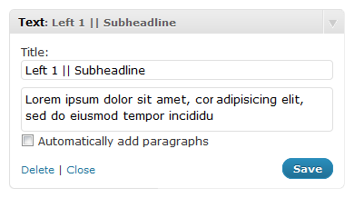
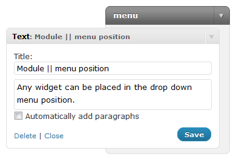

Set up the WordPress widgets
This tutorial shows you how to set up widgets in your Warp based themes.
Using Styles / Icons / Badges

Widgets can be displayed in different styles with additional icons and badges. The /layouts/module.php takes care of displaying all these module variations. In general you can say that all widgets can have a style, an icon and a badge.
To apply these variations to a widget, go to the Widget Options of your theme in the WordPress administration. After choosing a widget simply select the style, the icon and the badge in the dropdown boxes and click on Save.
Common widget options
- title: Defines whether to show the widget title or not.
- style: Defines the widget appearance.
- icon: Adds an icon to the title of your widget.
- badge: Adds a badge to your widget, usually in the top right corner.
- display: Defines on which page the widget should be displayed or not.
The available values for the module parameters vary depending on which theme you are using. Check out the Module Variations page of your theme to find out which values are available.
Add subtitles to widget headers

A subtitle can be added to a widget title by simply placing your subtitle text behind two "|" (pipe) characters. Navigate to Appearance » Widgets and add the subtitle text behind two "|" characters in the title field of the widget of your choice on the right.
Publish a widget in the menu

In the WordPress administration, go to Appearance » Widgets. Create a widget and drag & drop it to the position menu on the right.
Set the width of the widget in the menu
You can set the width of the widget in the menu by changing the CSS slightly. Open the file /css/modules.css and have a look at this CSS style:
#menu .mod-dropdown .dropdown { width: 300px; }
The default width is 300px, but you can change it to your needs. However it's recommended to {doc: create-a-new-style text: create your own style} because this way the all your changes will be kept when updating your theme.